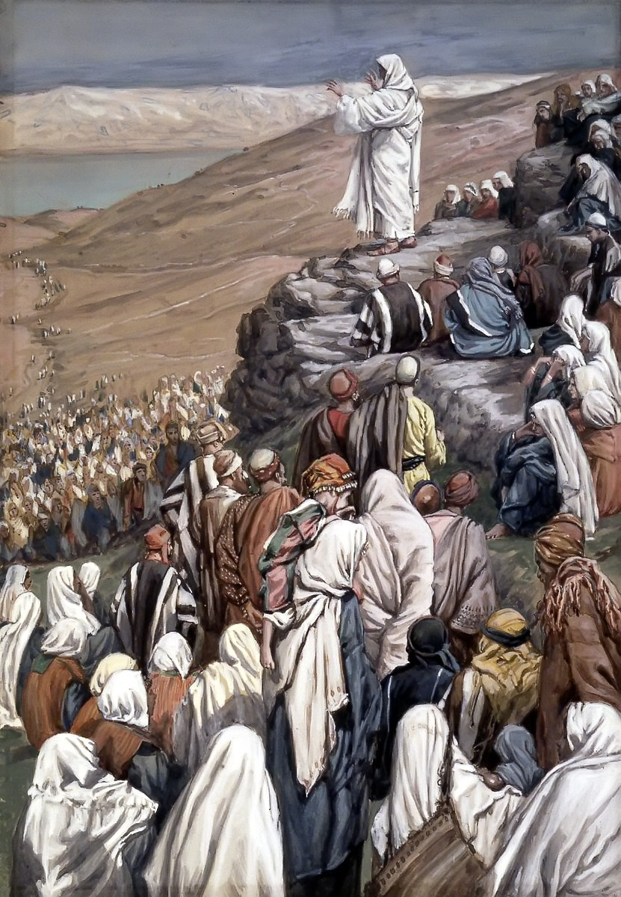

The Lawgiver
The Sermon on the Mount
For the Lord is our judge, the Lord is our lawgiver, the Lord is our king; he will save us.
Isaiah 33:22

The talks
- Office Isaiah 33:22, and the mountain. Moses went up a mountain and brought law down. He goes up a mountain and gives it himself. Tell us what a lawgiver is and what it claims to stand in that position.
- Case Matthew built his book around five long discourses and put this one first. Find out who he was writing for and show us why a Jewish audience needed the mountain, the law, and the fulfilling of it arranged in exactly that order.
- Epistle Galatians 5:22-25, the fruit of the Spirit. The Sermon tells you what a disciple looks like. Nobody can perform that list on command. Paul says where it actually comes from, and that is what your talk is for.
- Restoration 3 Nephi 12 through 14, where he gives the sermon again at Bountiful, and the Joseph Smith Translation of Matthew 5 through 7. Show us what changed and what those changes settle.
- Text The Beatitudes, Matthew 5:1-12. Do not race through all nine. Take three and go deep, and find out what "blessed" translates.
- World "Ye have heard that it was said." He is quoting something. Find out what the scribes and Pharisees actually taught on murder, adultery, oaths, and retaliation, so we can hear what he is answering.
- Witness Peter, who sat through this sermon and then spent the rest of his life trying to live it. Read 1 Peter with the Sermon open beside it. Take him through the questions on the facing page.
- Objection That the Sermon on the Mount is beautiful and impossible, and that "be ye therefore perfect" sets a standard no one can meet. Name it and answer it.
The title
Isaiah names three offices in one line, judge, lawgiver, king, and then says he will save us. The middle one is this cohort. Matthew has arranged his account so you cannot miss the comparison he is making. Moses went up Sinai and came back down with law that had been given to him. In Matthew 5, he goes up the mountain, sits down, and gives law on his own authority. Then he says it six times: ye have heard that it was said, but I say unto you. No prophet in Israel had ever talked that way. A prophet says thus saith the Lord. This is a man amending the law of Moses in the first person, in public, and the crowd noticed, because Matthew tells us at the end that they were astonished, for he taught them as one having authority and not as the scribes. Also notice what he says he is not doing. He did not come to destroy the law but to fulfil it. Your week has to hold both of those, the continuity and the raising of the standard, without dropping either one.
Required reading, for every speaker in this cohort
- Matthew 5, 6, and 7, read straight through in one sitting
- 3 Nephi 12:1-2 and the changes across 3 Nephi 12-14
- Exodus 19 and 20
- Galatians 5:16-26
- Matthew 7:28-29
Questions for thought
- Read Matthew 5, 6, and 7 in one sitting, out loud if you can. What is different about hearing it whole instead of in pieces?
- Six times he says "but I say unto you." Find out who else in Israel's history spoke that way about the law of Moses.
- In each of the six cases, is he loosening the law or tightening it? Work through all six before you answer.
- Find out what the scribes actually taught about oaths and about "an eye for an eye." Was he correcting the law of Moses or correcting what had been built on top of it?
- Compare the Beatitudes in Matthew 5 with 3 Nephi 12. What is added, and what does the addition tell you?
- "Be ye therefore perfect." Find out what the Greek word translated perfect means. Does that change the command?
- Galatians calls love, joy, peace, and longsuffering fruit rather than works. What is the difference between growing something and doing something?
- The crowd was astonished at his authority. What would it take for a sermon to astonish you?
- Pick one instruction from these three chapters that you have never seriously tried to obey. Why that one?